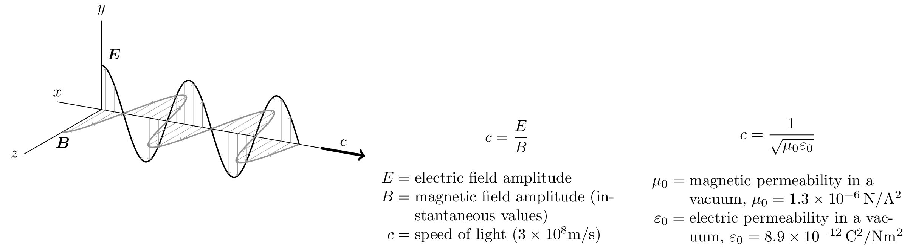

\documentclass{standalone}
\usepackage{tikz,bm}
\usepackage[raggedrightboxes]{ragged2e}
\begin{document}
\begin{tikzpicture}[x={(-10:1cm)},y={(90:1cm)},z={(210:1cm)}]
% Axes
\draw (-1,0,0) node[above] {$x$} -- (5,0,0);
\draw (0,0,0) -- (0,2,0) node[above] {$y$};
\draw (0,0,0) -- (0,0,2) node[left] {$z$};
% Propagation
\draw[->,ultra thick] (5,0,0) -- node[above] {$c$} (6,0,0);
% Waves
\draw[thick] plot[domain=0:4.5,samples=200] (\x,{cos(deg(pi*\x))},0);
\draw[gray,thick] plot[domain=0:4.5,samples=200] (\x,0,{cos(deg(pi*\x))});
% Arrows
\foreach \x in {0.1,0.3,...,4.4} {
\draw[->,help lines] (\x,0,0) -- (\x,{cos(deg(pi*\x))},0);
\draw[->,help lines] (\x,0,0) -- (\x,0,{cos(deg(pi*\x))});
}
% Labels
\node[above right] at (0,1,0) {$\bm{E}$};
\node[below] at (0,0,1) {$\bm{B}$};
\end{tikzpicture}
\begin{minipage}{.5\linewidth}
\[
c = \frac{E}{B}
\]
\begin{tabular}{r@{${}={}$}p{.8\linewidth}}
$E$ & electric field amplitude \\
$B$ & magnetic field amplitude (instantaneous values) \\
$c$ & speed of light ($3\times10^8\mathrm{m/s}$) \\
\end{tabular}
\end{minipage}%
\begin{minipage}{.5\linewidth}
\[
c = \frac{1}{\sqrt{\mu_0 \varepsilon_0}}
\]
\begin{tabular}{r@{${}={}$}p{.8\linewidth}}
$\mu_0$ & magnetic permeability in a vacuum, $\mu_0 = 1.3\times10^{-6}\,\mathrm{N/A^2}$ \\
$\varepsilon_0$ & electric permeability in a vacuum, $\varepsilon_0 = 8.9\times10^{-12}\,\mathrm{C^2/N m^2}$ \\
\end{tabular}
\end{minipage}
\end{document}Created by David Li